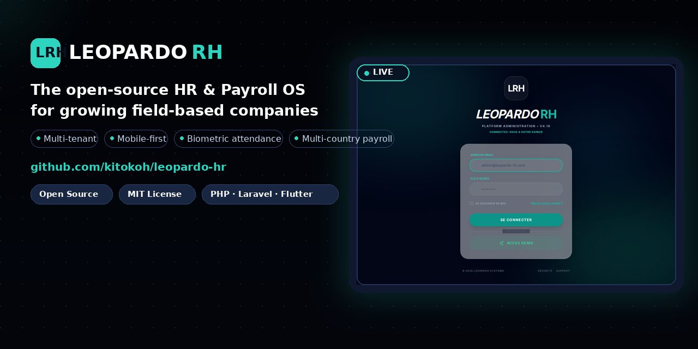

Open source · MIT · Self-hostable or SaaS
Employee records, attendance, leave, schedules, documents, payroll preparation and workforce analytics — unified across web, mobile and biometric kiosk.

A modular platform that grows with your company — from 10 to 10,000 employees.
Employee records, contracts, onboarding, documents and org chart in one centralized dossier.
Mobile check-in, GPS geofencing, biometric kiosk (ZKTeco) and approval workflows.
Multi-country payroll rules, validation workflow, payslips and compliant documents.
Anomaly detection, workforce indicators and LLM-driven HR insights.
Multi-tenant isolation, RBAC matrix, SSO (SAML/OIDC), encrypted sensitive data.
Full OpenAPI spec, JS/Python SDKs, webhooks and Postman collection for integration.
No more spreadsheet chasing — records, leave, schedules and documents in one place.
Real-time attendance, team schedules, approvals and alerts across multiple sites.
Payroll preparation with multi-country rules, validation workflows and audit trail.
A clean DDD modular monolith, 700+ documented endpoints, SDKs and CI/CD.
A real-world codebase to study: architecture, testing, CI/CD and mobile apps.
Native apps for attendance, leave requests, payslips and self-service.
Web dashboards, five native Flutter apps and a biometric kiosk path — all connected to one core.
Official public deployments (free-tier infrastructure):
MIT licensed, self-hostable, community-driven. No vendor lock-in, no closed core.